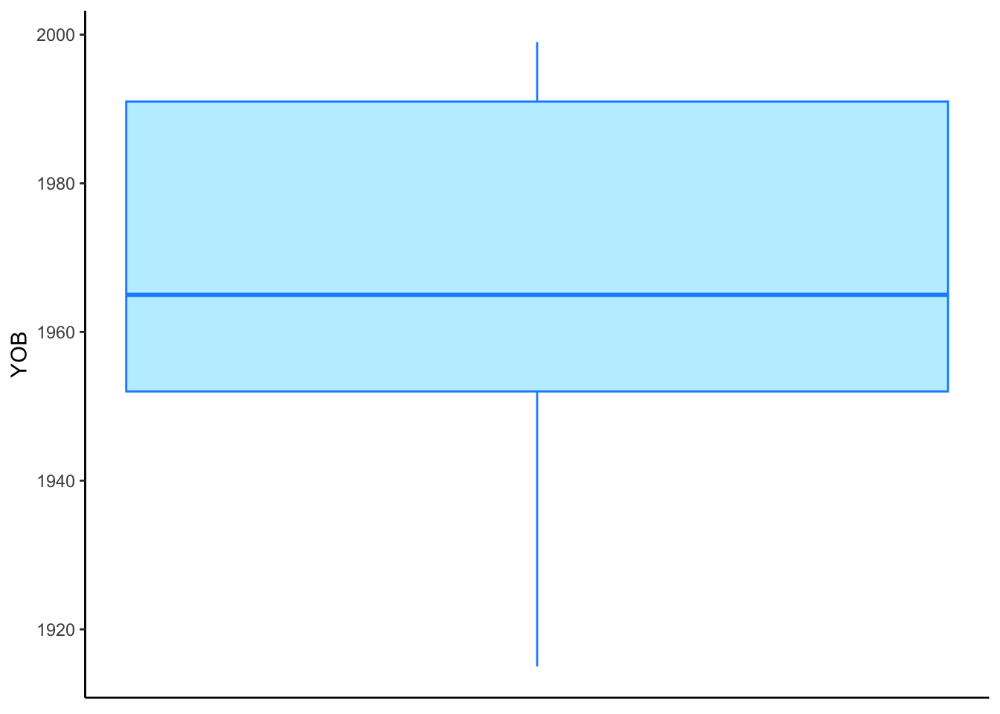
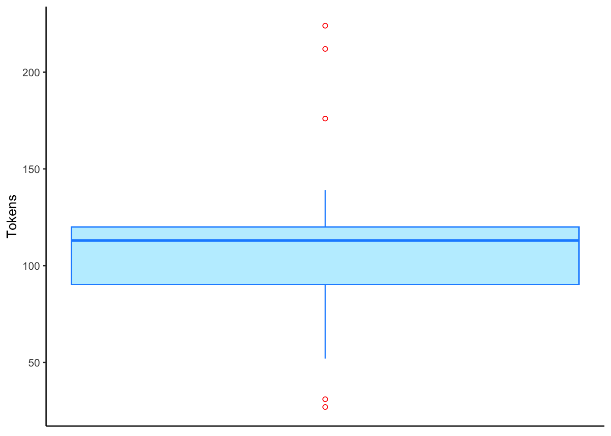

td <- read.delim("https://www.dropbox.com/s/jxlfuogea3lx2pu/deletiondata.txt?dl=1")Getting to Know Your Data
Getting a snapshot of your data. Types of data and data structures. Getting the dimensions of your data. Introducting the (t/d) dataset.
Matt Hunt Gardner ![]()
Getting to know the (t, d) deletion data
If you followed the previous section you now have an object in R called td. If not, you can load it now with either of the following codes.
td <- read.delim("Data/deletiondata.txt")Getting a Snapshot of the Data
Now that you have some data loaded into R you can start exploring it. At any time you can type td into the console window to see what that object actually represents. Try it.
tdTo find out how many columns there are in your data frame (this is what R calls spreadsheets), use the function nrow(). Similarly, to find out how many columns are in the data frame, use the function ncol(). The function dim() gives both.
nrow(td)[1] 6989ncol(td)[1] 12dim(td)[1] 6989 12There are 6,989 rows and 12 columns in this data frame.
The summary() function is one of the most useful functions you’ll use in R. It gives you a quick snapshot of a data frame.
summary(td) Dep.Var Stress Category Morph.Type
Length:6989 Length:6989 Length:6989 Length:6989
Class :character Class :character Class :character Class :character
Mode :character Mode :character Mode :character Mode :character
Before After Speaker YOB
Length:6989 Length:6989 Length:6989 Min. :1915
Class :character Class :character Class :character 1st Qu.:1952
Mode :character Mode :character Mode :character Median :1965
Mean :1967
3rd Qu.:1991
Max. :1999
Sex Education Job Phoneme.Dep.Var
Length:6989 Length:6989 Length:6989 Length:6989
Class :character Class :character Class :character Class :character
Mode :character Mode :character Mode :character Mode :character
The summary() function shows you the name of all the columns in the data frame and what each column contains.
When you import a data frame into R, R automatically decides what type of data each column contains. Any data frame columns where all cells contain only numbers are assumed to numeric or integer data (depending on if there are decimal values). Any columns that include letters will be assumed to be character data.
For numeric or integer data (like YOB, or year of birth of the speakers in the td data), the summary() function will tell you the mean, the median, the minimum value, the maximum value, and the values of the first and third quartiles. The mean is the arithmetic mean, which is the sum of all the values in a column divided by the number of values in a column. Fifty percent of the values in the column are equal to or less than the mean and 50% of the values in the column are greater than or less than the mean. The mean can also be thought of as the 2nd quartile. The median is exact middle point of the values in the column ordered from smallest to largest. For normally distributed data, the mean and the median should be close to the same value. Not all data, however, is normally distributed, which is sometimes a problem, and sometimes not a problem. If a certain test expects numerical data to be normally distributed these instructions will explain what to do, but for now, it’s just good to know what mean and median indicate. Twenty-five percent of the values in the column are equal to or less than the 1st quartile and 75% of the values in the column are equal to or less than the 3rd quartile. The minimum value is the lowest value in a column; the maximum value is the highest number in a column. These values can be used to construct a box and whisker plot:

YOB (Year of Birth) in the td data frameThe bottom whisker ends at the minimum value of 1910. The bottom line of the box displays the first quartile value of 1952. The thick bar in the middle of the box is at the second quartile value/mean of 1965. The top line of the box ends at the third quartile value of 1991. The range from the first quartile to the third quartile is called the interquartile range. The top whisker ends at the maximum value of 1999. Sometimes extremely high or extremely low values are more than \(1.5\times\) the interquartile range from the top or bottom of the box. In these cases the whiskers will extend out to the last value within \(1.5\times\) the interquartile range and anything beyond that will be an outlier and identified with a small circle, as in Figure 2.

td data frameThe function names() returns a vector (a series of items in a line, separated by commas) of the column names. This function can be useful as a quick way to get the names of each column. You will need to use these names quite often when writing other commands. colnames() returns the same information; ls() returns the same information, but ordered alphabetically.
names(td) [1] "Dep.Var" "Stress" "Category" "Morph.Type"
[5] "Before" "After" "Speaker" "YOB"
[9] "Sex" "Education" "Job" "Phoneme.Dep.Var"colnames(td) [1] "Dep.Var" "Stress" "Category" "Morph.Type"
[5] "Before" "After" "Speaker" "YOB"
[9] "Sex" "Education" "Job" "Phoneme.Dep.Var"ls(td) [1] "After" "Before" "Category" "Dep.Var"
[5] "Education" "Job" "Morph.Type" "Phoneme.Dep.Var"
[9] "Sex" "Speaker" "Stress" "YOB" The function str() describes the structure of a data frame. It reports similar information as summary() but does not include descriptions of each column; however, the layout of the information is sometimes a little easier to read, especially if your data frame has many columns. Here we can see that YOB is categorized as int (integer) data and all the other columns are chr (character) data.
str(td)'data.frame': 6989 obs. of 12 variables:
$ Dep.Var : chr "Realized" "Realized" "Realized" "Deletion" ...
$ Stress : chr "Stressed" "Stressed" "Stressed" "Stressed" ...
$ Category : chr "Function" "Function" "Function" "Function" ...
$ Morph.Type : chr "Mono" "Mono" "Mono" "Mono" ...
$ Before : chr "Vowel" "Vowel" "Vowel" "Vowel" ...
$ After : chr "Pause" "Pause" "Pause" "Pause" ...
$ Speaker : chr "BOUF65" "CHIF55" "CLAF52" "CLAM73" ...
$ YOB : int 1965 1955 1952 1973 1915 1941 1953 1953 1958 1946 ...
$ Sex : chr "F" "F" "F" "M" ...
$ Education : chr "Educated" "Educated" "Educated" "Not Educated" ...
$ Job : chr "White" "White" "Service" "Blue" ...
$ Phoneme.Dep.Var: chr "t--Affricate" "t--Fricative" "t--Affricate" "t--Deletion" ...head() will return the first six lines of the data frame. tail() provides the last six. For either you can change the number of lines reported using the option n=.
head(td) Dep.Var Stress Category Morph.Type Before After Speaker YOB Sex
1 Realized Stressed Function Mono Vowel Pause BOUF65 1965 F
2 Realized Stressed Function Mono Vowel Pause CHIF55 1955 F
3 Realized Stressed Function Mono Vowel Pause CLAF52 1952 F
4 Deletion Stressed Function Mono Vowel Pause CLAM73 1973 M
5 Realized Stressed Function Mono Vowel Pause DONF15 1915 F
6 Realized Stressed Function Mono Vowel Pause DONM41 1941 M
Education Job Phoneme.Dep.Var
1 Educated White t--Affricate
2 Educated White t--Fricative
3 Educated Service t--Affricate
4 Not Educated Blue t--Deletion
5 Not Educated Service t--Fricative
6 Not Educated Blue t--FricativeThe numbers on the left side of the output are the row number in the data frame.
tail(td, n = 10) Dep.Var Stress Category Morph.Type Before After Speaker YOB Sex
6980 Realized Stressed Function Mono Vowel Vowel STEM42 1942 M
6981 Realized Stressed Function Mono Vowel Vowel VIKF91 1991 F
6982 Realized Stressed Function Mono Vowel Vowel VIKF91 1991 F
6983 Realized Stressed Lexical Mono Nasal Pause PACM94 1994 M
6984 Deletion Stressed Lexical Mono S Pause INGM84 1984 M
6985 Realized Stressed Lexical Mono S Vowel INGM84 1984 M
6986 Realized Stressed Function Mono Vowel Pause GARF16 1916 F
6987 Realized Stressed Lexical Mono Vowel Pause GARF87 1987 F
6988 Deletion Stressed Lexical Mono Vowel Pause GARF87 1987 F
6989 Realized Stressed Lexical Mono Vowel Pause GARF87 1987 F
Education Job Phoneme.Dep.Var
6980 Not Educated Service d--Glottal Stop
6981 Student Student d--Flap
6982 Student Student d--Flap
6983 Student Student d--T
6984 Educated Service t--Deletion
6985 Educated Service t--Glottal Stop
6986 Not Educated Service t--Fricative
6987 Educated White d--T
6988 Educated White d--Deletion
6989 Educated White d--DTypes of Data
There are other types of data beside numerical (like YOB in the td data) and character (like all other columns in the td data).
| Data Type | Description | Example |
logical |
either TRUE or FALSE |
The answer to a question like "is x a number?", etc. |
numeric |
any real number, positive or negative, with or without decimal values | Vowel formant measurements, position in an audio file, household income, etc. |
double |
any real number, positive or negative, with or without decimal values (identical to numeric) |
Vowel formant measurements, position in an audio file, household income, etc. |
integer |
whole numbers and their negative counterparts | year of birth, year of data collection, number of occurrences of something, etc. |
complex |
data that includes imaginary or unknown elements | the pythagorian theroem, i.e., \(a^2 + b^2 = c^2\), where \(a\), \(b\), and \(c\) are unknown |
character |
single characters (like ’F’) or strings (like "female") |
gender, speaker name, etc. |
raw |
raw bytes | Anything expressed in bytes |
Note
Character data is always enclosed in either single quotes ' ' or double quotes " ". It is common practice to use single quotes for single characters and double quotes for strings, though either type of quotation marks will work with either data type.
double is short for “double precision floating point numbers”. Don’t worry about the difference between numeric and double, because it doesn’t really matter.
It is uncommon to use raw data in sociolinguistics. Anything can be expressed in bytes. There are two functions to convert from characters to bytes, and bytes to characters. To go from characters to bytes:
raw_variable <- charToRaw("Sociolinguistics is fun")
print(raw_variable) [1] 53 6f 63 69 6f 6c 69 6e 67 75 69 73 74 69 63 73 20 69 73 20 66 75 6eprint(class(raw_variable))[1] "raw"Above the function charToRaw() converts the string "Sociolinguistics is fun" to bytes and assigns that raw data to the object raw_variable. Next the print() function displays in R the contents of the variable raw_variable. The class() function returns the type of data contained within a variable. To convert back to characters:
char_variable <- rawToChar(raw_variable)
print(char_variable)[1] "Sociolinguistics is fun"print(class(char_variable))[1] "character"Types of Data Structures
A vector and a list are the most basic types of data structures. A vector is a collection of elements, most commonly a collection of character, logical, integer, or numeric values. Values can be combined into a vector using the concatenating function c()
simple.vector <- c("Labov", "Fishman")
print(simple.vector)[1] "Labov" "Fishman"We can explore the vector using some of the same functions we’ve already seen.
length(simple.vector)[1] 2class(simple.vector)[1] "character"str(simple.vector) chr [1:2] "Labov" "Fishman"Lists are like vectors but can contain a mixture of different data types. Characters must be in quotation marks. Numbers in quotation marks will be categorized as characters. Numeric data is numbers without quotation marks. Integers are specificed by adding L after the number. Logical values are either TRUE or FALSE in all capital letters.
simple.list <- list("Labov", "Fishman", "2001", 1963,
1.5, 1974L, TRUE)
print(simple.list)[[1]]
[1] "Labov"
[[2]]
[1] "Fishman"
[[3]]
[1] "2001"
[[4]]
[1] 1963
[[5]]
[1] 1.5
[[6]]
[1] 1974
[[7]]
[1] TRUElength(simple.list)[1] 7class(simple.list)[1] "list"str(simple.list)List of 7
$ : chr "Labov"
$ : chr "Fishman"
$ : chr "2001"
$ : num 1963
$ : num 1.5
$ : int 1974
$ : logi TRUEYou will notice that the results of the str() function show that Labov, Fishman and 2001 are all categorized as chr (character); 1963 and 1.5 are categorized as num (numeric); 1974 is categorized as int (integer); and TRUE is categorized as logi (logical).
Lists can be bigger than just one group of data. Items in a list can also be more complex than a single value.
complex.list <- list(a = "John Baugh", b = simple.vector,
c = simple.list, d = head(td))
print(complex.list)$a
[1] "John Baugh"
$b
[1] "Labov" "Fishman"
$c
$c[[1]]
[1] "Labov"
$c[[2]]
[1] "Fishman"
$c[[3]]
[1] "2001"
$c[[4]]
[1] 1963
$c[[5]]
[1] 1.5
$c[[6]]
[1] 1974
$c[[7]]
[1] TRUE
$d
Dep.Var Stress Category Morph.Type Before After Speaker YOB Sex
1 Realized Stressed Function Mono Vowel Pause BOUF65 1965 F
2 Realized Stressed Function Mono Vowel Pause CHIF55 1955 F
3 Realized Stressed Function Mono Vowel Pause CLAF52 1952 F
4 Deletion Stressed Function Mono Vowel Pause CLAM73 1973 M
5 Realized Stressed Function Mono Vowel Pause DONF15 1915 F
6 Realized Stressed Function Mono Vowel Pause DONM41 1941 M
Education Job Phoneme.Dep.Var
1 Educated White t--Affricate
2 Educated White t--Fricative
3 Educated Service t--Affricate
4 Not Educated Blue t--Deletion
5 Not Educated Service t--Fricative
6 Not Educated Blue t--Fricativestr(complex.list)List of 4
$ a: chr "John Baugh"
$ b: chr [1:2] "Labov" "Fishman"
$ c:List of 7
..$ : chr "Labov"
..$ : chr "Fishman"
..$ : chr "2001"
..$ : num 1963
..$ : num 1.5
..$ : int 1974
..$ : logi TRUE
$ d:'data.frame': 6 obs. of 12 variables:
..$ Dep.Var : chr [1:6] "Realized" "Realized" "Realized" "Deletion" ...
..$ Stress : chr [1:6] "Stressed" "Stressed" "Stressed" "Stressed" ...
..$ Category : chr [1:6] "Function" "Function" "Function" "Function" ...
..$ Morph.Type : chr [1:6] "Mono" "Mono" "Mono" "Mono" ...
..$ Before : chr [1:6] "Vowel" "Vowel" "Vowel" "Vowel" ...
..$ After : chr [1:6] "Pause" "Pause" "Pause" "Pause" ...
..$ Speaker : chr [1:6] "BOUF65" "CHIF55" "CLAF52" "CLAM73" ...
..$ YOB : int [1:6] 1965 1955 1952 1973 1915 1941
..$ Sex : chr [1:6] "F" "F" "F" "M" ...
..$ Education : chr [1:6] "Educated" "Educated" "Educated" "Not Educated" ...
..$ Job : chr [1:6] "White" "White" "Service" "Blue" ...
..$ Phoneme.Dep.Var: chr [1:6] "t--Affricate" "t--Fricative" "t--Affricate" "t--Deletion" ...In the list complex.list column a contains only one value: John Baugh. Column b contains our simple.vector, column c contains our simple.list, and column d includes the first six rows of the td data (which itself has columns). To access the values from columns within columns you can use multiple $ operators.
print(complex.list$a)[1] "John Baugh"print(complex.list$d) Dep.Var Stress Category Morph.Type Before After Speaker YOB Sex
1 Realized Stressed Function Mono Vowel Pause BOUF65 1965 F
2 Realized Stressed Function Mono Vowel Pause CHIF55 1955 F
3 Realized Stressed Function Mono Vowel Pause CLAF52 1952 F
4 Deletion Stressed Function Mono Vowel Pause CLAM73 1973 M
5 Realized Stressed Function Mono Vowel Pause DONF15 1915 F
6 Realized Stressed Function Mono Vowel Pause DONM41 1941 M
Education Job Phoneme.Dep.Var
1 Educated White t--Affricate
2 Educated White t--Fricative
3 Educated Service t--Affricate
4 Not Educated Blue t--Deletion
5 Not Educated Service t--Fricative
6 Not Educated Blue t--Fricativeprint(complex.list$d$Job)[1] "White" "White" "Service" "Blue" "Service" "Blue" Generally, in LVC analysis we do not deal often with either simple vectors or lists; instead, most of our data is in a spreadsheet-like format, which in R is a data frame.
Data frames are a special type of list in which every element in the list has the same length (unlike, for example, the complex.list above). Data frames can have additional annotations, like rownames(). Some statisticians use rownames() for things like participantID, sampleID, or some other unique identifier. Most of the time (and for our purposes), rownames() are not useful given that we have multiple rows from the same speaker/interview, etc.
Factors and Comments
A factor in R is a special type of variable or data type that, in theory, has a limited number of values. Each value is called a level. Any vector or data frame column of character or integer values can be a factor. Most non-numerical data in LVC is generally thought of as a factor already, so knowing how to convert vectors or data frame columns to factors is important. For example, in the td data, the column Stress contains only two options: Stressed and Unstressed. Because this column contains letters, when we imported it into R, it was automatically categorized as character data. This is probably the best option for a column that, for example, contained the broader context of a token. For Stress, however, it is better for our purposes for R to consider the column as containing a factor with two discrete levels. Below is the code to convert Stress into a factor.
# Determine the class of the column Stress in the
# date frame td
class(td$Stress)[1] "character"# Convert Stress to a column to a factor
td$Stress <- factor(td$Stress)
# Verify class of Stress column
class(td$Stress)[1] "factor"Notice the comments in the code above. In R any line that begins with a # is not evaluated. This is called commenting out a line. We use # to include notes in our codes, or to keep code in our script file but have R ignore it. This can be useful in order to keep track of the steps you are taking in an analysis (see also this tutorial on organizing code using #)
Columns within a data frame can be specified using the $ operator So, above, we tell R to assign (using the assignment operator <-) the values of the original td$Stress column, converted into factors, back to the column td$Stress. In other words, we are replacing the original column td$Stress with a converted version of itself. Now, look how the output of the summary() function changes.
summary(td) Dep.Var Stress Category Morph.Type
Length:6989 Stressed :6555 Length:6989 Length:6989
Class :character Unstressed: 434 Class :character Class :character
Mode :character Mode :character Mode :character
Before After Speaker YOB
Length:6989 Length:6989 Length:6989 Min. :1915
Class :character Class :character Class :character 1st Qu.:1952
Mode :character Mode :character Mode :character Median :1965
Mean :1967
3rd Qu.:1991
Max. :1999
Sex Education Job Phoneme.Dep.Var
Length:6989 Length:6989 Length:6989 Length:6989
Class :character Class :character Class :character Class :character
Mode :character Mode :character Mode :character Mode :character
We get the number of observations of each level of td$Stress instead of just the number of rows (i.e. the length of the column).
To get the levels of a factor we can use the function levels() and to get the number of levels, we can use the function nlevels()
levels(td$Stress)[1] "Stressed" "Unstressed"nlevels(td$Stress)[1] 2More Exploring
If you only want information from a single column of the data frame, you can use the operator $ to specify which column of td you want. Here the column `Sex’ is specified.
summary(td$Sex) Length Class Mode
6989 character character levels(td$Sex)NULLThe Sex column is still categorized as character data and so summary() only return the number of rows (length) of the column and there are no levels. To get the information we want about the Sex column (i.e., how many tokens are from male speakers and how many are from women speakers) we need to convert it to a factor first. We can either convert the the column to a factor column, or we can use the as.factor() function to have R treat is as a factor in just the following code.
summary(as.factor(td$Sex)) F M
3776 3213 levels(as.factor(td$Sex))[1] "F" "M"The following code changes all the character class columns to factors.
# Start with a fresh import of the (t, d) data
# into R, downloading it directly
td <- read.delim("https://www.dropbox.com/s/jxlfuogea3lx2pu/deletiondata.txt?dl=1")
# or using the version saved locally in a folder
# Data in the same location as your script file
td <- read.delim("Data/deletiondata.txt")
# Now convert each character column into a factor
td$Dep.Var <- factor(td$Dep.Var)
td$Stress <- factor(td$Stress)
td$Category <- factor(td$Category)
td$Morph.Type <- factor(td$Morph.Type)
td$Before <- factor(td$Before)
td$After <- factor(td$After)
td$Speaker <- factor(td$Speaker)
td$Sex <- factor(td$Sex)
td$Education <- factor(td$Education)
td$Job <- factor(td$Job)
td$Phoneme.Dep.Var <- factor(td$Phoneme.Dep.Var)The (t/d) Data
Let’s look at the data now that all the character columns are factors.
summary(td) Dep.Var Stress Category Morph.Type
Deletion:1747 Stressed :6555 Function: 739 Mono :5236
Realized:5242 Unstressed: 434 Lexical :6250 Past : 782
Semi-Weak: 971
Before After Speaker YOB Sex
Liquid : 269 Consonant: 709 GARF87 : 224 Min. :1915 F:3776
Nasal : 209 H : 246 INGM84 : 212 1st Qu.:1952 M:3213
Other Fricative: 130 Pause :5248 MARM92 : 176 Median :1965
S : 332 Vowel : 786 HANF83 : 139 Mean :1967
Stop : 249 CHIF55 : 135 3rd Qu.:1991
Vowel :5800 GARF16 : 132 Max. :1999
(Other):5971
Education Job Phoneme.Dep.Var
Educated :3006 Blue :1068 t--Deletion : 981
Not Educated:2184 Service:2895 t--Fricative: 973
Student :1799 Student:1799 t--T : 830
White :1227 d--Deletion : 766
t--Affricate: 667
d--T : 583
(Other) :2189 As shown by the summary(td) results above, the first column in the (t, d) deletion data is called Dep.Var and it includes two levels: Realized and Deletion. These two levels represent the two options for each token of (t, d). The values after each level are how many rows are coded with that level. In other words, there are 1,747 rows (or tokens) of Deletion and there are 5,242 rows (or tokens) of Realized. Notice that the order of the factor levels is alphabetical. There is a column labelled Stress which indicates if the (t, d) token is in a stressed or unstressed syllable. The Category column indicates if the word in which the (t, d) token appears is a function or lexical word. Morph.Type indicates if the (t, d) occurs in a monomorpheme (like fist), a semi-weak simple past-tense verb (like dealt ) in which there is a vowel change and a (t,d) sound is added, or a weak simple past-tense verb (like walked) in which just /-ed/ is added. Before indicates the type of sound preceding the (t, d) and After indicates the sound following the (t, d). Speaker is a unique identifier for each participant in the data (only the first six are displayed, though); YOB indicates the speaker’s year of birth, Sex his or her sex1, Education his or her education level, and Job his or her job type. Finally, Phoneme.Dep.Var indicates the canonical underlying phoneme of the (t, d) token and a more detailed coding of the dependent variable.
Footnotes
These were the only two sex/gender identities reported by speakers in this data.↩︎
Reuse
CC-BY-SA 4.0
Citation
BibTeX citation:
@online{gardner2022,
author = {Gardner, Matt Hunt},
title = {Getting to {Know} {Your} {Data}},
series = {Linguistics Methods Hub},
volume = {Doing LVC with R},
date = {2022-09-27},
url = {https://lingmethodshub.github.io/content/R/lvc_r/030_lvcr.html},
doi = {10.5281/zenodo.7160718},
langid = {en}
}
For attribution, please cite this work as:
Gardner, Matt Hunt. 2022, September 27. Getting to Know Your Data.
Linguistics Methods Hub: Doing LVC with R. (https://lingmethodshub.github.io/content/R/lvc_r/030_lvcr.html).
doi: 10.5281/zenodo.7160718